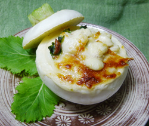

白子のカブグラタン
- 調理時間：30 分
- （一人当たり）
- カロリー：258kcal
- たんぱく質：13.1g
- 脂質：15.5g
- 炭水化物：15.6g
- 塩分：1.6g


＜2人分＞
- カブ（大）
- 2個
- タラの白子
- 60g
- とろけるチーズ
- 少々
- ・薄力粉
- 15g
- ・バター
- 15g
- ・牛乳
- 200～300ml
程度 - ・塩・コショウ
- 各少々
ホワイトソース A


- カブは皮をむいて塩(分量外)を振り、電子レンジにかける。
串が通るくらいにやわらかくなったらスプーンでくりぬき器をつくる。
カブの葉は２～３cm幅に切り、下茹でする。 - タラの白子は熱湯でサッと下茹でして、食べやすい大きさに切る。
- Aの材料でホワイトソースを作っておく。
1.厚手の鍋にバターを入れ、弱めの中火にかける。バターが半分溶けたところで小麦粉を加えて手早く混ぜ、全体が白っぽくなり、さらさらしてくるまで、焦がさないように炒める。
2.牛乳を数回に分けて加える。大きい気泡が出てきた後も、焦がさないよう気をつけながら火にかける。塩・コショウで味をととのえる。 - 白子とカブの葉は③のホワイトソースでからめ、①の器に詰める。
チーズを散らして、オーブンで焦げ目がつくまで焼いて完成
白子のカブグラタン
カブの旬は一年に２回。種まきの時期によって品種や成育環境が違うので味に多少の変化が表れます。春が旬のカブは生食でもやわらかく、秋冬のカブは甘みが増します。
カブは大根と異なり、薬膳の世界では身体を温める「温・熱性」の性質をもちます。また消化酵素の働きが強いため、消化不良の改善や健胃作用や腸内環境をととのえますし、年末年始の弱った胃腸を助けます。冷え性や便秘の改善、さらにカリウムやビタミンEなど特に女性にうれしい栄養素も含まれます。
とろける食感のカブを寒い冬に食べるのも季節の醍醐味。アツアツでいただきましょう。